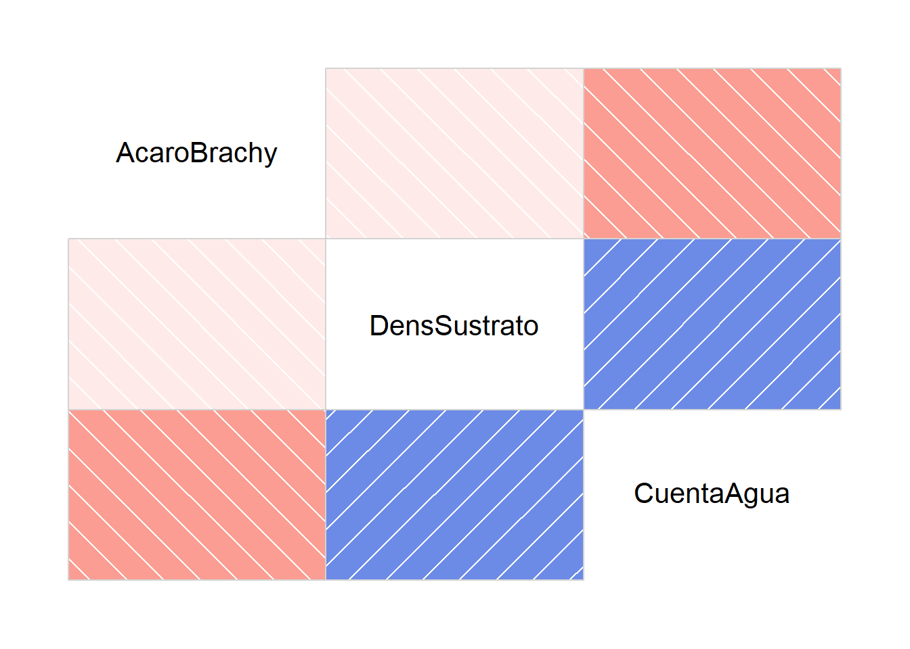
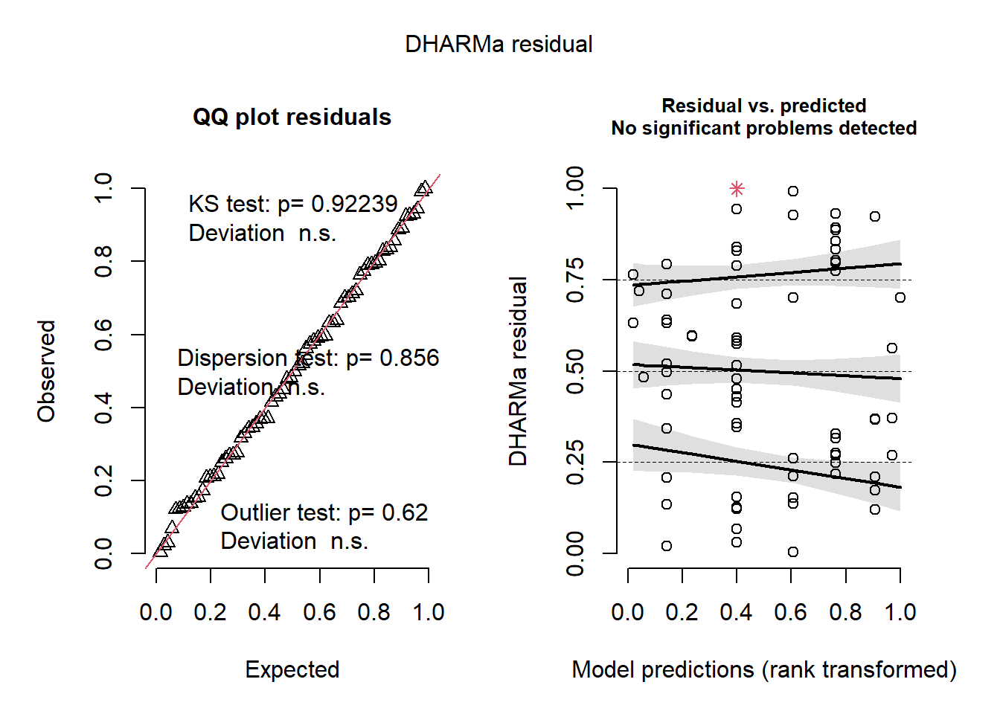
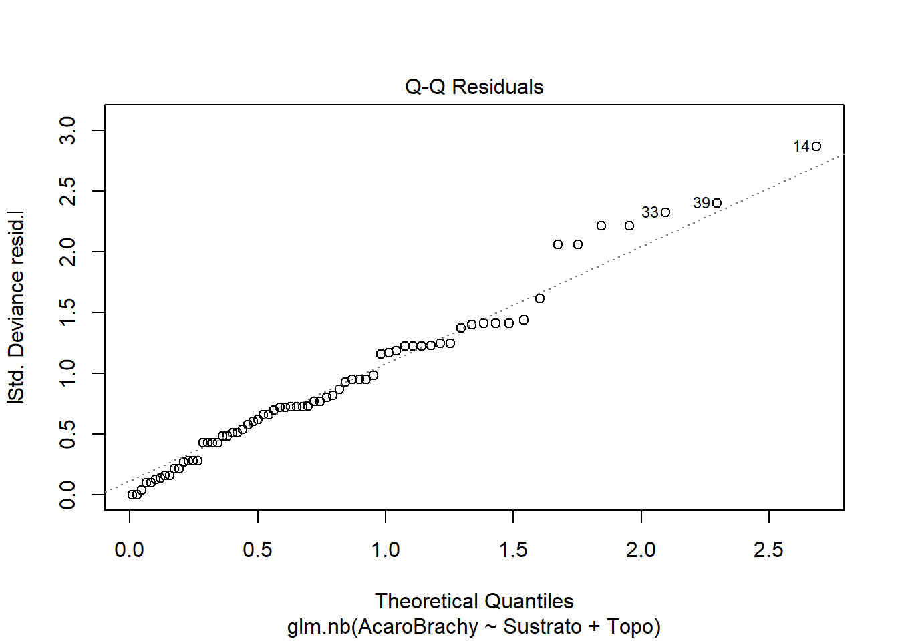

ac %>%
ggplot(aes(x=AcaroBrachy, y=CuentaAgua))+
geom_point()+
geom_smooth(method="lm")Modelos lineales
Había un montón de tipos de modelos que puede ocupar para analizar sus datos, desde lo más básico hasta ellos que pueden tomar combinaciones complicadas para representar sus datos. El prepósito de un modelo, generalmente, es crear una combinación de variables que puede representar una relación entre variables en una manera correcta y que crear valores predictivos.
Con sistemas naturales, la idea puede ser tener predicciones para el futuro, pero frecuentemente se interesa mas la pregunta si haya relaciones entre variables o no.
Es super importante tener y saber una hipótesis acá, y anota que nunca puede probar que tu hipótesis es verdad, sino que significancia decía que no hay evidencia que tu hipótesis es incorrecto. Tampoco, puede decir que una variable explicativa causa su variable de respuesta.
¡Por esta razón, su interpretación de sus propios resultados con conocimiento profundo de su proyecto es super importante!
Casi nunca puede decir que algo causa otra, pero si conozca bien su proyecto y sistema, podría elucidar conclusiones e ideas desde sus correlaciones.
¿Como funciona los modelos lineales?
De nivel más básico, un modelo lineal toma dos variables y te cuenta la relación entre los dos, incluyendo si suben/bajan juntos y con qué incremento.
La fórmula super básico es así:
Y = mX + b
X e Y son tus variables explicativas (X) y respuesta (Y)
M es la inclinación, o sea, el rato de cambio por Y con cada unidad de X
B es la intersección (o sea, cuando no hay ninguna del Y: ¿cuántas unidades del X hay?)
Entonces, desde un modelo lineal básico, puede aprender mucho. Este tipo de modelo mas básico, con una variable de respuesta y una variable explicativa es un modelo lineal, y se usa el función ‘lm()’
Por ejemplo:
lmej <- lm(data=ac, AcaroBrachy ~ CuentaAgua)
summary(lmej)
Call:
lm(formula = AcaroBrachy ~ CuentaAgua, data = ac)
Residuals:
Min 1Q Median 3Q Max
-11.540 -6.439 -2.891 3.974 31.352
Coefficients:
Estimate Std. Error t value Pr(>|t|)
(Intercept) 17.736018 3.545694 5.002 4.24e-06 ***
CuentaAgua -0.021935 0.008165 -2.687 0.00906 **
---
Signif. codes: 0 '***' 0.001 '**' 0.01 '*' 0.05 '.' 0.1 ' ' 1
Residual standard error: 9.655 on 68 degrees of freedom
Multiple R-squared: 0.09596, Adjusted R-squared: 0.08267
F-statistic: 7.218 on 1 and 68 DF, p-value: 0.009063Eso es un ejemplo básico, pero normalmente en ecología/agronomía, los datos y relaciones son complicados. Si haya algo en el campo, tendría mas que una variable explicativa, porque hay otras cosas que se afectan su variable respuesta. Además, hay mas etapas que hacer su gráfico y después el modelo. Los supuestos son super importantes y sus tipos de datos también. Así que, empezamos con GLM.
Empezando con GLM
GLMs son similares a modelos lineales, pero son mas flexible, y tienen poquito más tolerancia a residuos non-normales. Entonces, puede hacer un análisis/modelo más complicado con GLM.
Para hacer un modelo, necesita una pregunta y/o una hipótesis.
Por ejemplo: acá tenemos la abundancia de Acaro Brachy, densidad del sustrato, cantidad del agua en el sustrato, sustrato, nivel de cobertura de arbustos y topografia. Supongo que la pregunta central es cuales factores se impactan lo distribución de Acaro Brachy.
head(ac) AcaroBrachy DensSustrato CuentaAgua Sustrato Arbusto Topo
1 17 39.18 350.15 Sphagn1 Few Hummock
2 2 54.99 434.81 Litter Few Hummock
3 4 46.07 371.72 Interface Few Hummock
4 23 48.19 360.50 Sphagn1 Few Hummock
5 5 23.55 204.13 Sphagn1 Few Hummock
6 19 57.32 311.55 Sphagn1 Few HummockLa hipótesis puede incluir algunas de las variables o todos.
Una hipótesis puede ser así: Habría una abundancia más alta de Acaro Brachy con sustratos mas densos y un nivel de cobertura de arbustos menos denso.. Entonces, probamos los variables ‘DensSustrato’ y ‘Arbusto’. Podemos incluir también el resto, pero no son lo prioridad.
Una pregunta puede ser: ¿Cuáles factores medio ambientales impacta la abundancia del Acaro Brachy?
Así podemos usar todos los variables para ver cual tiene impacto.
- No olvide a cambiar los tipos de datos ANTES de hacer modelos (y si quiere, transformar)
ac$DensSustrato <- as.numeric(ac$DensSustrato)
ac$CuentaAgua <- as.numeric(ac$CuentaAgua)
ac$Sustrato <- as.factor(ac$Sustrato)
ac$Arbusto <- as.factor(ac$Arbusto)
ac$Topo <- as.factor(ac$Topo)- Y sacar sus outliers
ac %>%
identify_outliers(AcaroBrachy) AcaroBrachy DensSustrato CuentaAgua Sustrato Arbusto Topo is.outlier
11 36 35.59 134.13 Sphagn3 Many Blanket TRUE
12 28 46.80 405.91 Sphagn1 Few Hummock TRUE
14 41 37.25 239.51 Interface Many Blanket TRUE
29 42 32.86 323.12 Interface Many Hummock TRUE
33 38 36.44 387.30 Sphagn2 Few Blanket TRUE
is.extreme
11 FALSE
12 FALSE
14 TRUE
29 TRUE
33 FALSEquartiles <- quantile(ac$AcaroBrachy, probs=c(.25, .75), na.rm = FALSE)
IQR <- IQR(ac$AcaroBrachy)
# -3 deviaciónes estander
Lower <- quartiles[1] - 1.5*IQR
# +3 deviaciónes estander
Upper <- quartiles[2] + 1.5*IQR
acso <- subset(ac, ac$AcaroBrachy > Lower & ac$AcaroBrachy < Upper)- Además debería probar por correlaciónes antes
library(corrgram)
Attaching package: 'corrgram'The following object is masked from 'package:lattice':
panel.fillacc <- ac[1:3]
corrgram(acc)
Opciones para evaluar
Lo mejor modelo es lo mas simple, o sea, con la cantidad menor de variables explicativas. Pero, es importante considerar todos los variables que quizás afectan su variable respuesta. Y por eso, el numero de observaciones es importante: no puede usar mas variables explicativas que observaciones, y de hecho si tiene menos de diez observaciones debería usar menos variables explicativas que la mitad de sus observaciones.
familia y supuestos
Es super importante usar una familia que tiene sentido por sus datos. Además, algunas familias son poquito mas tolerante a datos con mas varianza o nonnormalidad (pero todavía necesita probar estas supuestos)
Puede elegir su familia antes de hacer algo (de hecho, debe saber cual piensa que te sirve antes), pero igual puede probarlas con los supuestos.
Sintaxis completo para un glm
glm(data=data, var_res ~ var_exp1 + var_exp2 + var_exp3 * var_exp4, family=“poisson”)
1. Emepzar con una familia (si no elije una, es Gaussian)
# acá es gaussian
ABBase <- glm(data=ac, AcaroBrachy ~ DensSustrato + CuentaAgua + Sustrato + Topo)
simResABBase <-simulateResiduals(ABBase) #DHARMa: hace resiudos y graficos para evaluar normalidad y homogeneidad de varianza
# si hay líneas super curvados, rojo o valor P<0.05) en el QQ plot (izquierda) no vale
plot(simResABBase)# entonces acá es malo# intenta de nuevo con distinta familia (binomio negativo)
ABBaseBN <- glm.nb(data=ac, AcaroBrachy ~ DensSustrato + CuentaAgua + Sustrato + Topo)
simResABBaseBN <-simulateResiduals(ABBaseBN) #DHARMa: hace resiudos y graficos para evaluar normalidad y homogeneidad de varianza
# si hay líneas super curvados, rojo o valor P<0.05) en el QQ plot (izquierda) no vale
plot(simResABBaseBN)# mejor, pero todavia con problemas# intenta de nuevo con distinta familia (binomio negativo)
ABBasep <- glm(data=ac, AcaroBrachy ~ DensSustrato + CuentaAgua + Sustrato + Topo, family="poisson")
simResABBasep <-simulateResiduals(ABBasep) #DHARMa: hace resiudos y graficos para evaluar normalidad y homogeneidad de varianza
# si hay líneas super curvados, rojo o valor P<0.05) en el QQ plot (izquierda) no vale
plot(simResABBasep)# superrr malNinguno de estos tres modelos se cumple con los supuestos. Pero, puede elegir lo que es mejor ahora, porque a veces cuando eliminar variables, resultara que uno u otro fue el problema. Hice esto con los valores del criterio de información de Akaike (CIA o AIC).
library(MuMIn)
lr_output.AIC <- model.sel(ABBase, ABBaseBN, ABBasep) # incluir los modelos de interés
lr_AIC.table<-as.data.frame(lr_output.AIC)[7:12] # estas columnas pueden cambiar, entonces puede ver en el tab 'environment' también
lr_AIC.table class init.theta link df logLik AICc
ABBaseBN negbin 1.39 log 11 -211.5763 449.7044
ABBase glm 11 -250.1195 526.7907
ABBasep glm 10 -352.4087 728.5461Acá la mejor familia es el binomio negativo, que también fue lo mas cerca a normal según los gráficos. Entonces parte allá. Antes que sigue, tenemos que probar el intercorrelación también con ‘VIF’ del paquete ‘car’.
vif(ABBaseBN) GVIF Df GVIF^(1/(2*Df))
DensSustrato 1.278126 1 1.130542
CuentaAgua 1.537536 1 1.239974
Sustrato 1.650343 6 1.042632
Topo 1.529773 1 1.236840# todos los valores deben ser <2No hay intercorrelación problemática, entonces siga.
Elegiendo modelo mejor
Había ambas opciones para elegir un modelo, y eliminar variables que son menos importante. Acá muestra tres básicos:
1. Eliminación hacia atrás con Drop1/AIC
Con regresión eliminación hacia atrás, empezamos con todas las variables y eliminarlas uno a uno hasta que queda uno y después elige lo mejor modelo con AIC. Esto es bueno porque puede elegir una a una las variables que son más o menos efectivo. Es malo si tiene algunas variables si son obligatorias dejar.
- Empieza con un modelo con todas sus variables explicativas. Elegir una familia adecuada y probar por correlación/normalidad/homogeneidad de varianza.
- Usar ‘drop1’ con prueba preferida (‘chisq’ es mi favorito) para identificar la variable con lo menor impacto
- Hacer un nuevo modelo con este variable eliminado
- Rehacerlo hasta que queda uno o que todos son significantes
# parte con 'ABBaseBN' del los modelos que ya he hecho
drop1(ABBaseBN, test="Chisq")Single term deletions
Model:
AcaroBrachy ~ DensSustrato + CuentaAgua + Sustrato + Topo
Df Deviance AIC LRT Pr(>Chi)
<none> 75.355 443.15
DensSustrato 1 76.135 441.93 0.7795 0.37729
CuentaAgua 1 78.456 444.25 3.1005 0.07827 .
Sustrato 6 91.139 446.94 15.7843 0.01496 *
Topo 1 81.171 446.97 5.8160 0.01588 *
---
Signif. codes: 0 '***' 0.001 '**' 0.01 '*' 0.05 '.' 0.1 ' ' 1# lo menos fuerte es DensSustrato (número más grande)ABBaseBN2 <- glm.nb(data=ac, AcaroBrachy ~ CuentaAgua + Sustrato + Topo)
simResABBaseBN2 <-simulateResiduals(ABBaseBN2) #DHARMa: hace resiudos y graficos para evaluar normalidad y homogeneidad de varianza
# si hay líneas super curvados, rojo o valor P<0.05) en el QQ plot (izquierda) no vale
plot(simResABBaseBN2)# todavia no cumple con los supuestosDe nuevo
drop1(ABBaseBN2, test="Chisq")Single term deletions
Model:
AcaroBrachy ~ CuentaAgua + Sustrato + Topo
Df Deviance AIC LRT Pr(>Chi)
<none> 75.357 441.93
CuentaAgua 1 77.882 442.45 2.5244 0.11209
Sustrato 6 90.229 444.80 14.8716 0.02128 *
Topo 1 80.967 445.54 5.6095 0.01786 *
---
Signif. codes: 0 '***' 0.001 '**' 0.01 '*' 0.05 '.' 0.1 ' ' 1# cuenta aguaABBaseBN3 <- glm.nb(data=ac, AcaroBrachy ~ Sustrato + Topo)
simResABBaseBN3 <-simulateResiduals(ABBaseBN3)
plot(simResABBaseBN3)
# excelente! Ahora se cumple con los supuestosDe nuevo
drop1(ABBaseBN3, test="Chisq")Single term deletions
Model:
AcaroBrachy ~ Sustrato + Topo
Df Deviance AIC LRT Pr(>Chi)
<none> 75.588 442.41
Sustrato 6 97.390 452.21 21.803 0.001315 **
Topo 1 85.592 450.42 10.004 0.001562 **
---
Signif. codes: 0 '***' 0.001 '**' 0.01 '*' 0.05 '.' 0.1 ' ' 1# todo tiene significancia, entonces podemos pararAsí que ahora todo es significante, es la hora de probar todos los modelos con AIC.
library(MuMIn)
lr_output.AIC <- model.sel(ABBase, ABBaseBN, ABBasep, ABBaseBN2, ABBaseBN3) # incluir los modelos de interés
lr_AIC.table<-as.data.frame(lr_output.AIC)[7:12] # estas columnas pueden cambiar, entonces puede ver en el tab 'environment' también
lr_AIC.table class init.theta link df logLik AICc
ABBaseBN3 negbin 1.31 log 9 -213.2054 447.4108
ABBaseBN2 negbin 1.37 log 10 -211.9637 447.6561
ABBaseBN negbin 1.39 log 11 -211.5763 449.7044
ABBase glm 11 -250.1195 526.7907
ABBasep glm 10 -352.4087 728.5461ABBaseBN3, o sea el último, es lo mejor modelo.
# probar supuestos
simResABBaseBN3 <-simulateResiduals(ABBaseBN3)
plot(simResABBaseBN3)vif(ABBaseBN3) GVIF Df GVIF^(1/(2*Df))
Sustrato 1.19508 6 1.014962
Topo 1.19508 1 1.093197plot(ABBaseBN3)Warning: not plotting observations with leverage one:
11
Así que el modelo se cumple con todos los supuestos, ve los resultados.
# resultados
summary(ABBaseBN3)
Call:
glm.nb(formula = AcaroBrachy ~ Sustrato + Topo, data = ac, init.theta = 1.314842229,
link = log)
Coefficients:
Estimate Std. Error z value Pr(>|z|)
(Intercept) 1.546e+00 2.430e-01 6.361 2e-10 ***
SustratoSphagn2 5.695e-01 3.469e-01 1.642 0.100644
SustratoSphagn3 2.038e+00 9.205e-01 2.214 0.026833 *
SustratoSphagn4 -7.038e-01 7.198e-01 -0.978 0.328182
SustratoLitter -9.743e-01 7.782e-01 -1.252 0.210588
SustratoBarepeat -2.985e+01 6.000e+05 0.000 0.999960
SustratoInterface 3.404e-01 2.778e-01 1.225 0.220453
TopoHummock 8.630e-01 2.558e-01 3.374 0.000741 ***
---
Signif. codes: 0 '***' 0.001 '**' 0.01 '*' 0.05 '.' 0.1 ' ' 1
(Dispersion parameter for Negative Binomial(1.3148) family taken to be 1)
Null deviance: 103.660 on 69 degrees of freedom
Residual deviance: 75.588 on 62 degrees of freedom
AIC: 444.41
Number of Fisher Scoring iterations: 1
Theta: 1.315
Std. Err.: 0.261
2 x log-likelihood: -426.411 Así que los dos variables que quedan son factores, en los resultados, se muestra todos los niveles y su significancia. Que puede decir desde los resultados?
La primera colúmna (Estimate) es la inclinación del modelo. O sea que comparado al intercept, el sustrato Sphagn2 tiene 0.5x la abundancia del intercept. Es imporante ver y tener en cuenta la inclinación porque puede tener un modelo que tiene muchísimas variables significantes, pero la diferencia es super poco (por ejemplo solo gana un más abeja). En el ‘estimate’ un valor positivo es más grande, y negativo es más chico.
‘Std. error’ o sea, error estander, es el error. Siempre hay duda en modelos, pero un modelo super bien tiene un nivel bajo de duda, o sea, un error estander más chico.
El Z-value (o t-value) es importante porque puede evaluar la fuerza del estimación por variable. O sea, su Z/T es su estimate dividio por el error. Entonces, un valor más chico tiene un error más grande, y tiene más duda.
El Pr es su valor p. Usa eso para evaluar significancia. Había un superenfoque en significancia en ecologia, pero debería leer bien todo, porque es super posible que tiene un modelo significante pero debíl. Las estrellas significa cuales variables son significadamente distinto al resto (o sea, que tiene una abundancia significiativamente alto o bajo comparado al resto).
Vamos a hablar de más indicaciones del fuerza de su modelo más adelante.
2. regresión ‘forward’
Usa regresión forward para añadir de forma rapido las variables más impactantes.
Empece con un modelo vacio (o sea var.res ~ 1), sin variables explicativas y un modelo con todas las variables de interés.
Usa el función ‘step’ para elegir la proxima variable que debería añadir hasta que nada son significados en step.
Puede probar/elegir su modelo mejor con AIC y no olvide a probar los supuestos.
ModVac <- glm(data=ac, AcaroBrachy ~ 1) # modelo con ninguna variable explicativa
ModTodo <- glm(data=ac, AcaroBrachy ~ DensSustrato + CuentaAgua + Sustrato + Topo ) # modelo con todas las variables explicativas
# nombre step(partida, scope=list(lower=vacio, upper=todo))
Mod_forward <- step(ModVac, scope=list(lower=ModVac, upper=ModTodo))Start: AIC=525.13
AcaroBrachy ~ 1
Df Deviance AIC
+ CuentaAgua 1 6339.0 520.07
+ Topo 1 6569.2 522.57
<none> 7011.8 525.13
+ Sustrato 6 5972.4 525.90
+ DensSustrato 1 6956.2 526.57
Step: AIC=520.07
AcaroBrachy ~ CuentaAgua
Df Deviance AIC
<none> 6339.0 520.07
+ Topo 1 6214.4 520.68
+ DensSustrato 1 6335.6 522.03
+ Sustrato 6 5595.7 523.34
- CuentaAgua 1 7011.8 525.13Acá tiene dos respuestas a la pregunta, cuales variables son mejores por el modelo. Usa AIC para decidir, y puede ver que el modelo mejor con un variable es Cuenta Agua y no se da un modelo con 2 variables porque no sea mejor.
Pero, si ya no he probado sus supuestos, esto puede ser equivocado. Por ejemplo, los modelos acá están hechos con la familia gaussian, que es malo. Si hace de nuevo con binomio negativo, cambiaría los datos.
ModVac <- glm.nb(data=ac, AcaroBrachy ~ 1)
ModTodo <- glm.nb(data=ac, AcaroBrachy ~ DensSustrato + CuentaAgua + Sustrato + Topo )
Mod_forward <- step(ModVac, scope=list(lower=ModVac, upper=ModTodo))Start: AIC=452.91
AcaroBrachy ~ 1
Df Deviance AIC
+ CuentaAgua 1 70.120 445.31
+ Topo 1 75.104 450.29
+ Sustrato 6 65.567 450.75
<none> 79.723 452.91
+ DensSustrato 1 78.808 453.99
Step: AIC=444.64
AcaroBrachy ~ CuentaAgua
Df Deviance AIC
+ Topo 1 76.299 443.93
<none> 79.011 444.64
+ Sustrato 6 68.180 445.81
+ DensSustrato 1 78.955 446.59
- CuentaAgua 1 90.013 453.64
Step: AIC=443.88
AcaroBrachy ~ CuentaAgua + Topo
Df Deviance AIC
+ Sustrato 6 65.652 442.76
<none> 78.772 443.88
- Topo 1 81.581 444.69
+ DensSustrato 1 78.763 445.87
- CuentaAgua 1 87.467 450.58
Step: AIC=441.93
AcaroBrachy ~ CuentaAgua + Topo + Sustrato
Df Deviance AIC
<none> 75.357 441.93
- CuentaAgua 1 77.882 442.45
+ DensSustrato 1 74.587 443.16
- Sustrato 6 90.229 444.80
- Topo 1 80.967 445.54Así que ahora ocupa la familia adecuada, había más opciones. Había modelos hasta tres variables explicativas y lo mejor AIC es lo con tres.
Probamos esta variable:
RF3 <- glm.nb(data=ac, AcaroBrachy ~ CuentaAgua + Topo + Sustrato)
simResRF3 <-simulateResiduals(RF3)
plot(simResRF3)
vif(RF3) GVIF Df GVIF^(1/(2*Df))
CuentaAgua 1.420439 1 1.191822
Topo 1.524958 1 1.234892
Sustrato 1.425558 6 1.029988# podemos ver que no es exactamente bien
summary(RF3)
Call:
glm.nb(formula = AcaroBrachy ~ CuentaAgua + Topo + Sustrato,
data = ac, init.theta = 1.368777835, link = log)
Coefficients:
Estimate Std. Error z value Pr(>|z|)
(Intercept) 2.327e+00 5.328e-01 4.368 1.26e-05 ***
CuentaAgua -1.622e-03 1.002e-03 -1.618 0.1056
TopoHummock 6.832e-01 2.844e-01 2.402 0.0163 *
SustratoSphagn2 4.935e-01 3.429e-01 1.439 0.1501
SustratoSphagn3 1.474e+00 9.656e-01 1.527 0.1269
SustratoSphagn4 -7.238e-01 7.070e-01 -1.024 0.3060
SustratoLitter -1.108e+00 7.713e-01 -1.436 0.1509
SustratoBarepeat -2.855e+01 3.628e+05 0.000 0.9999
SustratoInterface 2.144e-01 2.792e-01 0.768 0.4426
---
Signif. codes: 0 '***' 0.001 '**' 0.01 '*' 0.05 '.' 0.1 ' ' 1
(Dispersion parameter for Negative Binomial(1.3688) family taken to be 1)
Null deviance: 106.812 on 69 degrees of freedom
Residual deviance: 75.357 on 61 degrees of freedom
AIC: 443.93
Number of Fisher Scoring iterations: 1
Theta: 1.369
Std. Err.: 0.275
2 x log-likelihood: -423.927 # pero se sale similar que el topo hummock es super significante y con el error más chicoSiempre, siempre probar sus modelos después de elegirlas, porque sus resultados no son validos si no cumpla con los supuestos.
3. regresión ‘backward’
Regresión hacia atrás, o sea, backward, es lo mismo idea que ‘forward’ pero empezamos con un modelo lleno y eliminar variables en vez de añadir. La distinción entre eso y la versión ‘stepwise’ es que acá hice todo el mismo tiempo. Puede ser bueno, pero también hay más posibilidad de error porque no prueba los supuestos en cada etapa.
ModVac <- glm.nb(data=ac, AcaroBrachy ~ 1)
ModTodo <- glm.nb(data=ac, AcaroBrachy ~ DensSustrato + CuentaAgua + Sustrato + Topo )
# acá empieza con el modelo lleno, porque va a eliminar no añadir
Mod_forward <- step(ModTodo, scope=list(lower=ModVac, upper=ModTodo), direction='backward')Start: AIC=443.15
AcaroBrachy ~ DensSustrato + CuentaAgua + Sustrato + Topo
Df Deviance AIC
- DensSustrato 1 76.135 441.93
<none> 75.355 443.15
- CuentaAgua 1 78.456 444.25
- Sustrato 6 91.139 446.94
- Topo 1 81.171 446.97
Step: AIC=441.93
AcaroBrachy ~ CuentaAgua + Sustrato + Topo
Df Deviance AIC
<none> 75.357 441.93
- CuentaAgua 1 77.882 442.45
- Sustrato 6 90.229 444.80
- Topo 1 80.967 445.54RB3 <- glm.nb(data=ac, AcaroBrachy ~ CuentaAgua + Sustrato + Topo)
RB3 <- glm.nb(data=ac, AcaroBrachy ~ CuentaAgua + Topo + Sustrato)
simResRB3 <-simulateResiduals(RB3)
plot(simResRB3)
vif(RB3) GVIF Df GVIF^(1/(2*Df))
CuentaAgua 1.420439 1 1.191822
Topo 1.524958 1 1.234892
Sustrato 1.425558 6 1.029988# podemos ver que no es exactamente bien
summary(RB3)
Call:
glm.nb(formula = AcaroBrachy ~ CuentaAgua + Topo + Sustrato,
data = ac, init.theta = 1.368777835, link = log)
Coefficients:
Estimate Std. Error z value Pr(>|z|)
(Intercept) 2.327e+00 5.328e-01 4.368 1.26e-05 ***
CuentaAgua -1.622e-03 1.002e-03 -1.618 0.1056
TopoHummock 6.832e-01 2.844e-01 2.402 0.0163 *
SustratoSphagn2 4.935e-01 3.429e-01 1.439 0.1501
SustratoSphagn3 1.474e+00 9.656e-01 1.527 0.1269
SustratoSphagn4 -7.238e-01 7.070e-01 -1.024 0.3060
SustratoLitter -1.108e+00 7.713e-01 -1.436 0.1509
SustratoBarepeat -2.855e+01 3.628e+05 0.000 0.9999
SustratoInterface 2.144e-01 2.792e-01 0.768 0.4426
---
Signif. codes: 0 '***' 0.001 '**' 0.01 '*' 0.05 '.' 0.1 ' ' 1
(Dispersion parameter for Negative Binomial(1.3688) family taken to be 1)
Null deviance: 106.812 on 69 degrees of freedom
Residual deviance: 75.357 on 61 degrees of freedom
AIC: 443.93
Number of Fisher Scoring iterations: 1
Theta: 1.369
Std. Err.: 0.275
2 x log-likelihood: -423.927 plot(RB3)Warning: not plotting observations with leverage one:
11Acá se sale lo mismo como regresión ‘forward’ pero distinto a ‘stepwise backward’. Depende en su cantidad de variables, puede salir de cualquier manera.